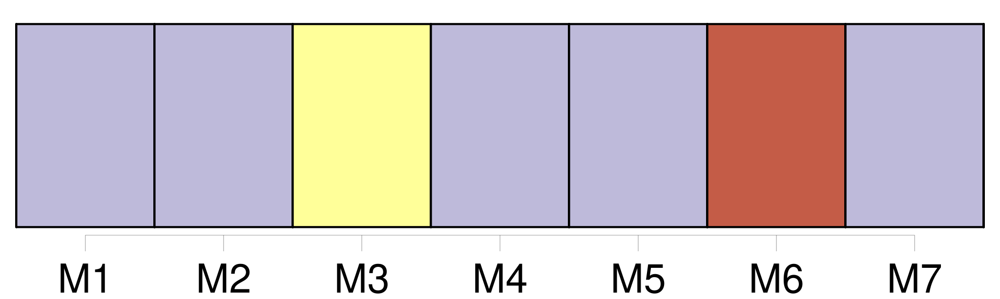

Longueur nb maillons : 23 mentions |
  |
Moi, pauvre prêtre de campagne, j’ ai mené en rêve toutes les nuits ( [Dieu] veuille que ce soit un rêve!! [1 phrases] Un seul regard trop plein de complaisance jeté sur une femme pensa causer la perte de mon âme ; mais enfin, avec l’ aide de [Dieu] et de mon saint patron, je suis parvenu à chasser l’ esprit malin qui s’ était emparé de moi. [1 phrases] Le jour, j’ étais un prêtre [du Seigneur] , chaste, occupé de la prière et des choses saintes ; la nuit, dès que j’ avais fermé les yeux, je devenais un jeune seigneur, fin connaisseur en femmes, en chiens et en chevaux, jouant aux dés, buvant et blasphémant ; et lorsqu’ au lever de l’ aube je me réveillais, il me semblait au contraire que je m’ endormais et que je rêvais que j’ étais prêtre.
De cette vie somnambulique il m’ est resté des souvenirs d’ objets et de mots dont je ne puis pas me défendre, et, quoique je ne sois jamais sorti des murs de mon presbytère, on dirait plutôt, à m’ entendre, un homme ayant usé de tout et revenu du monde, qui est entré en religion et qui veut finir dans le sein de [Dieu] des jours trop agités, qu’ un humble séminariste qui a vieilli dans une cure ignorée, au fond d’ un bois et sans aucun rapport avec les choses du siècle. [18 phrases]
L’ évêque, vieillard vénérable, me paraissait [Dieu le Père] penché sur [son] éternité, et je voyais le ciel à travers les voûtes du temple. [39 phrases]
Elle me disait : [4 phrases] Je t’ emmènerai vers les îles inconnues ; tu dormiras sur mon sein, dans un lit d’ or massif et sous un pavillon d’ argent ; car je t’ aime et je veux te prendre à [ton Dieu] , devant [qui] tant de nobles cœurs répandent des flots d’ amour qui n’ arrivent pas jusqu’ à [lui] [1 phrases] Je me sentais prêt à renoncer à [Dieu] , et cependant mon cœur accomplissait machinalement les formalités de la cérémonie. [51 phrases] Prenez garde, mon frère, et n’ écoutez pas les suggestions du diable ; l’ esprit malin, irrité de ce que vous vous êtes à tout jamais consacré [au Seigneur] , rôde autour de vous comme un loup ravissant et fait un dernier effort pour vous attirer à lui. [87 phrases] Je m’ agenouillai sans oser jeter les yeux sur le lit, et je me mis à réciter les psaumes avec une grande ferveur, remerciant [Dieu] qu’ [il] eût mis la tombe entre l’ idée de cette femme et moi, pour que je pusse ajouter à mes prières son nom désormais sanctifié. [78 phrases] Que [Dieu] veille sur vous, Romuald!! [34 phrases]
que je suis jalouse de [Dieu] , que tu as aimé et que tu aimes encore plus que moi! [2 phrases]
» [3 phrases] autant que [Dieu] !! [20 phrases]
Cependant les sensations avaient été si vives, qu’ il était difficile de croire qu’ elles n’ étaient pas réelles, et ce ne fut pas sans quelque appréhension de ce qui allait arriver que je me mis au lit, après avoir prié [Dieu] d’ éloigner de moi les mauvaises pensées et de protéger la chasteté de mon sommeil. [125 phrases] C’ était un spectacle étrange, et qui nous eût vus du dehors nous eût plutôt pris pour des profanateurs et des voleurs de linceuls, que pour des prêtres de [Dieu] [23 phrases] La paix de mon âme a été bien chèrement achetée ; l’ amour de [Dieu] n’ était pas de trop pour remplacer le sien. |

|
La ressource peut être téléchargée sur la page Ortolang
Si vous avez des questions ou vous voyez des erreurs, merci d'envoyer un mail à silvia.federzoni89@gmail.com
Site développé par S. Federzoni (contact)